Phase 1: Initial Concept
The project began as an educational game aimed at promoting diabetes awareness through gameplay.
Two learning paths were introduced:
- Prevention Path
- Management Path

Developed using Unity and C#
Life Guardian is a 3D educational endless runner designed to teach players about diabetes prevention and management through healthy food choices and lifestyle activities.
Players protect the sacred Baobab Tree by making healthy decisions. The tree's life reflects the player's overall progress.
The project began as an educational game aimed at promoting diabetes awareness through gameplay.
Two learning paths were introduced:
The world was built around the sacred Baobab Tree and portal system.
Players enter either the Prevention or Management environments.
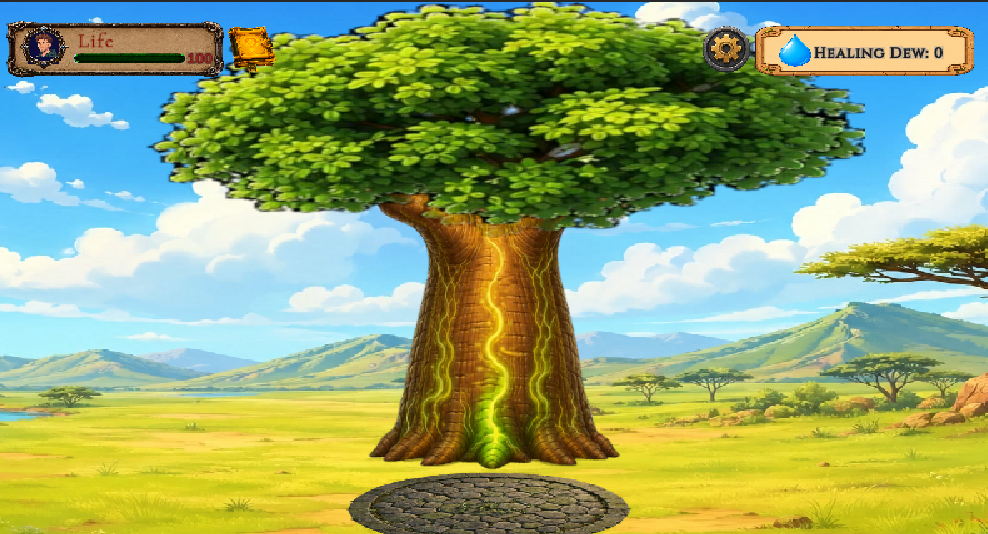
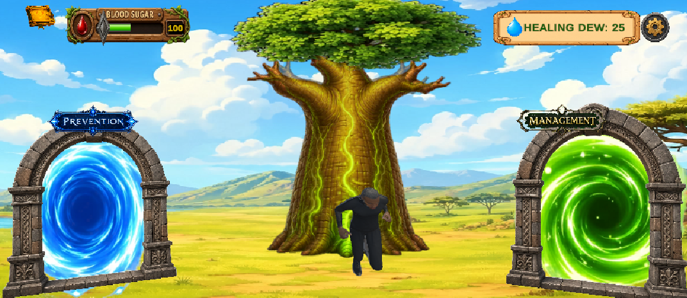
Implemented:
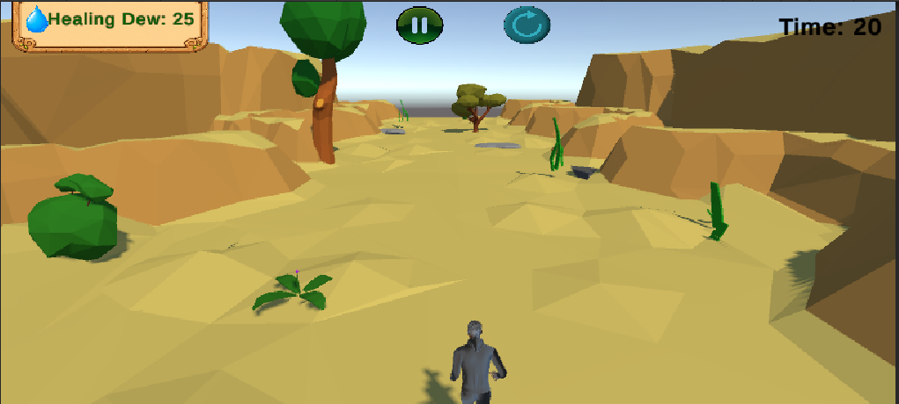

Healthy foods reward players while unhealthy foods introduce negative effects.
Healthy foods contribute to the health of the Baobab Tree and reward Healing Dew.
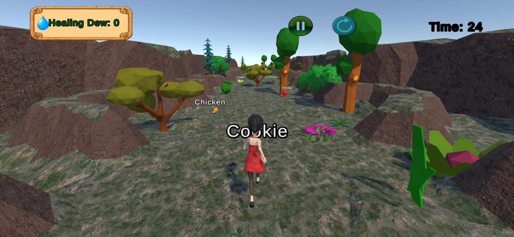

Healthy and unhealthy activities were added to encourage healthy lifestyle choices.

The Baobab Tree represents the player's health progress.
Healthy decisions increase Tree Life while unhealthy choices reduce it.


Healing Dew acts as the game's reward currency and helps unlock new levels.

Players can choose different avatars.
Several issues were encountered during development including scaling problems and falling avatars.
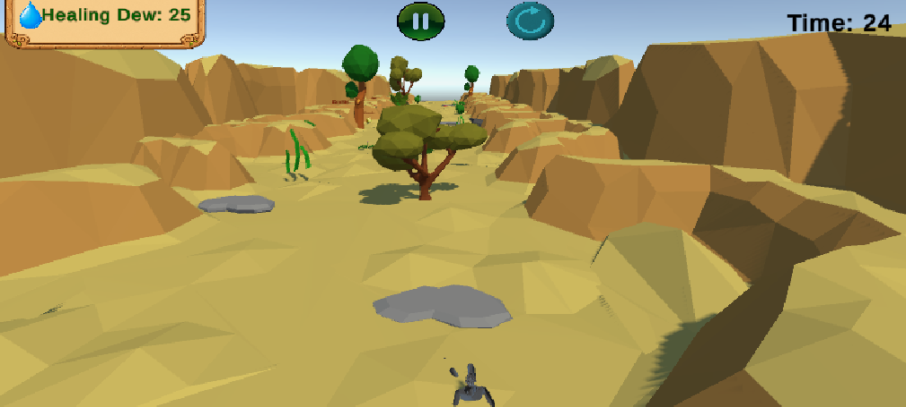
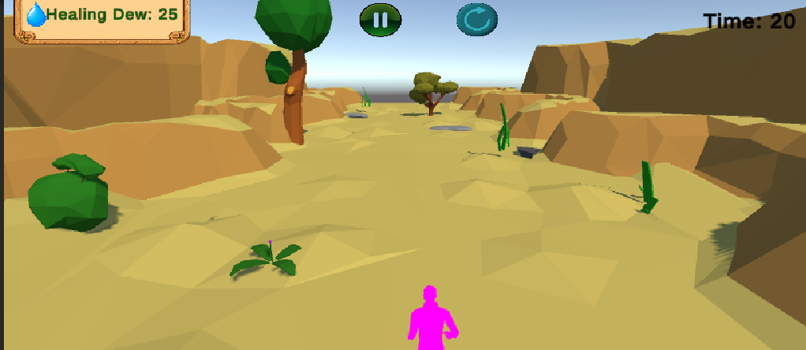
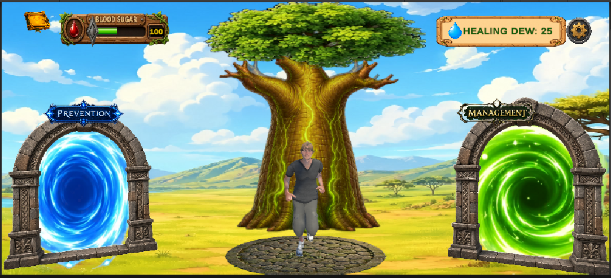
Originally, healthy foods continuously shrank the player to null.
This behaviour was redesigned.
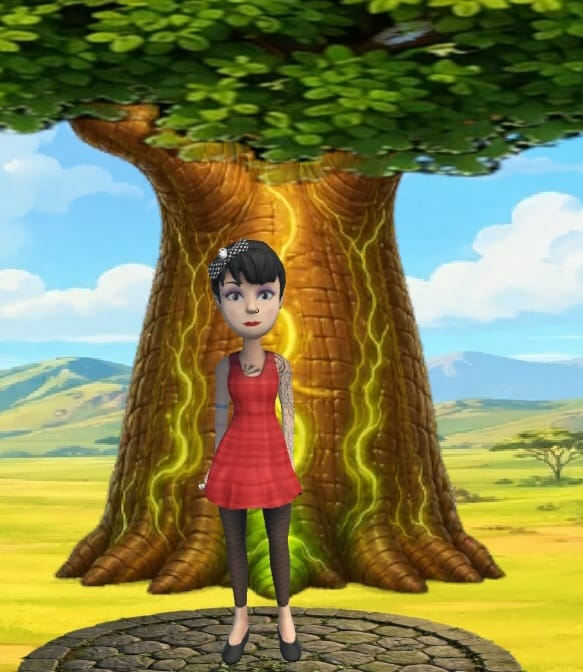
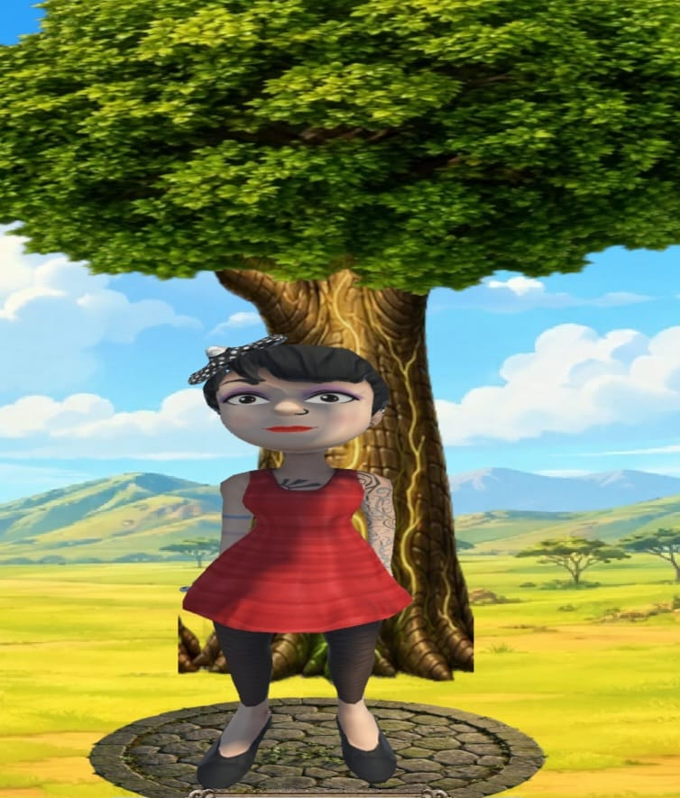
Achievements were introduced to reward players for healthy decisions and milestones.
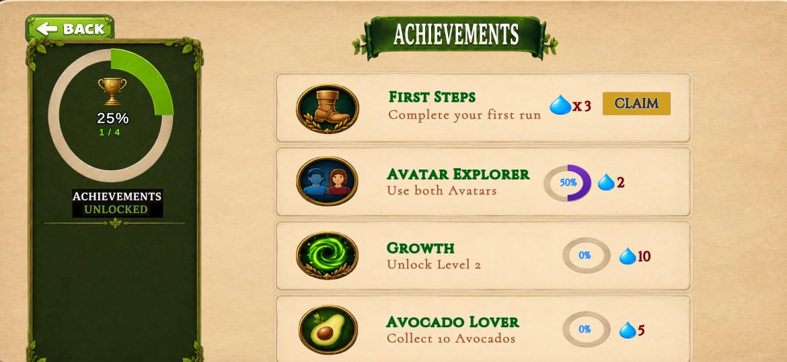
The tutorial evolved from simple text pages into a guided image-based tutorial.


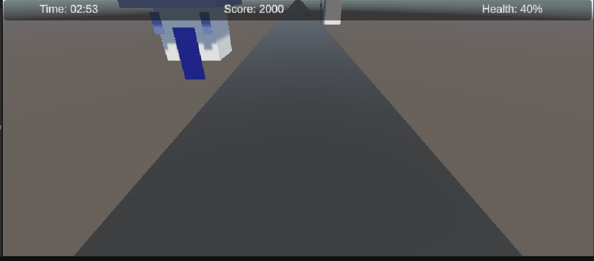
Testing was performed continuously throughout development.
Life Guardian currently includes:


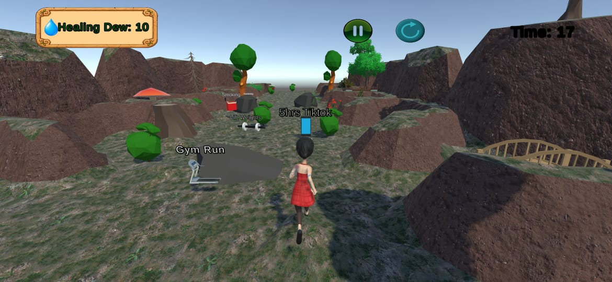
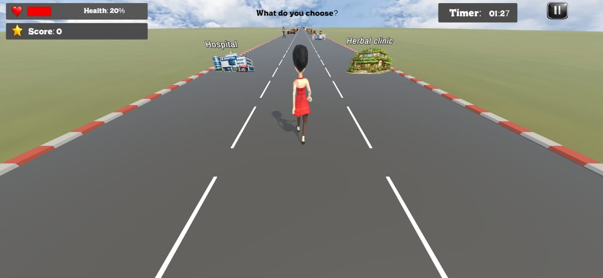
Life Guardian is intended to promote awareness and healthy habits. It is not a substitute for professional medical advice. Users should always consult healthcare professionals regarding medical concerns.